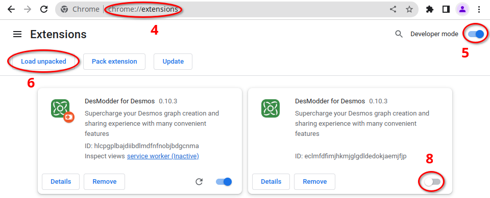
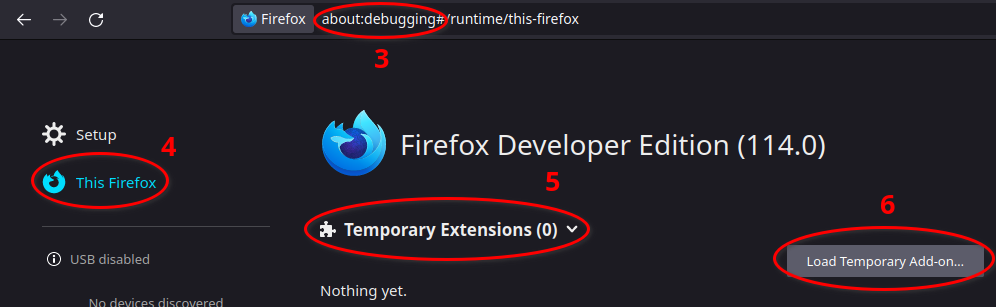

Installation
Preferred: Install from Webstore
You can install the stable version of DesModder directly from the Chrome Web Store or from the Firefox Web Store.
DesModder is currently only supported for Google Chrome, Chromium-based browsers such as Opera, Brave, and Vivaldi, and Firefox (or Firefox based browsers).
The extension updates every few weeks (see DesModder releases page for a history).
Advanced: Install from ZIP
To install versions that are not available on the Chrome or Firefox web stores, first download the correct version as a ZIP file, then install it.
Download
Sometimes the Chrome web store takes a few days to approve new extension releases. To download the latest stable release:
- Open DesModder Releases
- Download
DesModder-Chrome-[version].zip(for Chrome or Chromium-based browsers) orDesModder-Firefox-[version].zip(for Firefox).
Nightly pre-release builds are available to try the latest features as they are added. Warning: there may be issues with these versions. Take care. To download nightly releases:
- Navigate to the nightly builds page.
- Click the link in the right column corresponding to your browser. Chrome builds start with "DesModder-Chrome", and Firefox builds start with "DesModder-Firefox"
Install (Chrome and Other Browsers)
To install your downloaded DesModder-Chrome-[version].zip:
- Unzip (extract) the downloaded zip file to a folder
- Navigate to
chrome://extensions - Enable "Developer mode" (top-right)
- Click "Load unpacked"
- Select the unzipped folder
- If you already have DesModder from the webstore, disable that version. The prerelease version will have a red dot by its logo.
If you get the error "Manifest file is missing or unreadable" in step 5, make sure you selected the folder itself and not a folder containing it.
The correct folder will have a file called manifest.json directly inside.

Install (Firefox)
To install your downloaded DesModder-Firefox-[version].zip:
- Navigate to
about:debugging - Choose "This Firefox" on the left
- Click "Temporary Extensions"
- Click "Load Temporary Add-on"
- Select the downloaded zip file (do not extract).
